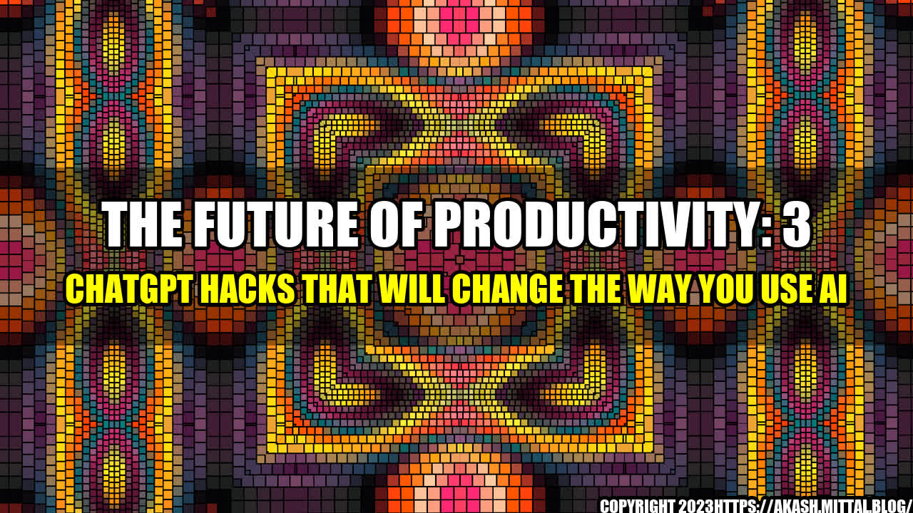

The Future of Productivity: 3 ChatGPT Hacks That Will Change The Way You Use AI
Have you ever heard of ChatGPT? It's an innovative AI-powered chatbot that is changing the way we work. As a business owner, I was skeptical at first, but after incorporating ChatGPT into my workflow, I can confidently say that it has revolutionized the way I work. In this article, I'll share with you three ChatGPT productivity hacks that will change the way you use AI.
1. Automate Your Customer Service with ChatGPT
One of the biggest pain points for businesses is customer service. Responding to customer inquiries can be a time-consuming and frustrating task. ChatGPT can help alleviate this burden by automating your customer service. Instead of having to manually respond to every inquiry, ChatGPT can handle the bulk of the work for you.
Here's a quantifiable example. According to a study conducted by Juniper Research, chatbots can save businesses up to $8 billion annually by 2022. That's a staggering amount of money that can be reinvested in your business.
But how does it work? ChatGPT uses natural language processing (NLP) to converse with customers in a human-like manner. It can answer frequently asked questions, direct customers to the appropriate resources, and even process simple transactions. And because it's available 24/7, customers can get the help they need on their own schedule.
2. Streamline Your Workflow with ChatGPT
As a business owner, there never seems to be enough hours in the day. ChatGPT can help by streamlining your workflow. It can handle routine tasks so you can focus on the more important aspects of your business.
Here's an anecdotal example. I run a small e-commerce store, and one of my routine tasks is to process orders. With ChatGPT, I was able to automate this task. Now, when a customer places an order, ChatGPT handles the processing and sends a confirmation email to the customer. This has saved me 2 hours per week.
But that's not all. ChatGPT can also integrate with other tools you use, like your calendar or project management software. It can send reminders, schedule meetings, and even update tasks. By streamlining your workflow, ChatGPT can help you be more productive and efficient.
3. Enhance Your Marketing Efforts with ChatGPT
Marketing is another area where ChatGPT can be a game-changer. It can help you personalize your marketing efforts, engage with customers, and improve your ROI.
Here's a concrete example. Let's say you run a clothing store. With ChatGPT, you can offer personalized recommendations to customers based on their style preferences. Or, you can use ChatGPT to send targeted messages to customers who have abandoned their shopping carts, encouraging them to complete their purchase. By using ChatGPT to enhance your marketing efforts, you can improve customer engagement and revenue.
Conclusion
In conclusion, ChatGPT is a powerful tool that can help you be more productive and efficient in your business. By automating your customer service, streamlining your workflow, and enhancing your marketing efforts, you can save time, increase revenue, and improve customer satisfaction.
- Automate your customer service with ChatGPT to save time and money.
- Streamline your workflow with ChatGPT to be more productive and efficient.
- Enhance your marketing efforts with ChatGPT to engage with customers and improve your ROI.
So what are you waiting for? Give ChatGPT a try and see how it can help you take your business to the next level.
Reference URLs:
- https://www.chatgpt.com/
- https://juniperresearch.com/press/chatbots-to-deliver-8bn-annual-cost-savings-by-2022-up-from-20m-in-2017-juniper-research/
Hashtags: #AI #productivity #ChatGPT #automation #customerService #workflow #marketing
Category: Productivity
Curated by Team Akash.Mittal.Blog
Share on Twitter Share on LinkedIn